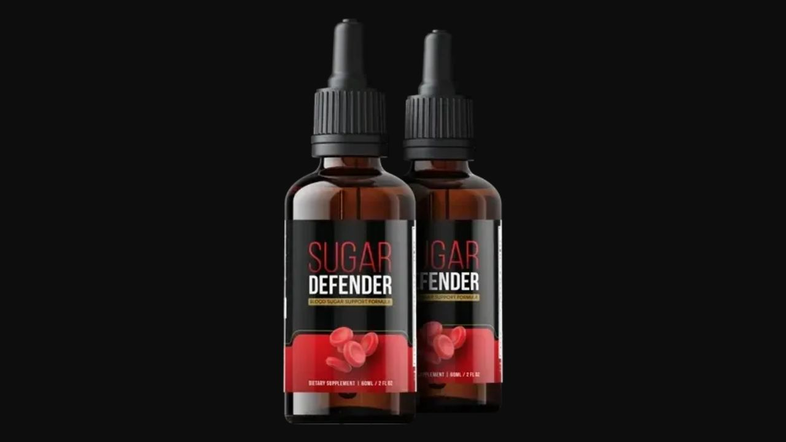

I investigated Sugar Defender's 24-ingredient liquid formula against the published blood sugar research. Here's what the science says and what real users report.

▶ Watch our full Sugar Defender video review before buying
Sugar Defender distinguishes itself in the crowded blood sugar supplement category through two key features: the liquid drop delivery format for superior absorption, and a 24-ingredient formula that addresses blood sugar instability from more biological angles simultaneously than any competing product I've reviewed. The combination of Eleuthero, Coleus, Maca Root, African Mango, Guarana, Ginseng, and Gymnema creates a comprehensive metabolic support system. For adults experiencing energy crashes, carbohydrate cravings, and gradually worsening blood glucose numbers, Sugar Defender represents a serious, multi-mechanism approach to the problem.
⚡ Ready to try Sugar Defender?
→ Visit Official Website NowOfficial site · Money-back guarantee · Secure checkoutAdaptogenic compound with published research showing improvements in glucose metabolism and insulin sensitivity. Reduces stress-hormone-driven glucose elevation — a frequently overlooked component of blood sugar instability. Provides sustained energy without the glucose spike-and-crash of stimulants.
Activates adenylate cyclase, increasing cellular cAMP levels that stimulate fat metabolism and improve insulin receptor sensitivity. Research published in Obesity Research showed meaningful improvements in body composition and metabolic markers in adults with metabolic dysfunction.
Andean adaptogen with specific effects on hormonal balance — particularly cortisol regulation. Elevated cortisol directly impairs insulin sensitivity and promotes glucose release from liver glycogen. Maca's cortisol-modulating effects address a hormonal driver of blood sugar instability most supplements ignore.
One of the most researched blood sugar botanicals. Works through two mechanisms: reduces glucose absorption in the small intestine by coating glucose receptors, and reduces sweet taste perception — directly addressing carbohydrate cravings. Published research shows meaningful reductions in post-meal glucose spikes.
Irvingia gabonensis seed extract with published research on leptin sensitivity, adiponectin levels, and metabolic rate. Addresses the hormonal component of appetite and fat metabolism that conventional blood sugar supplements typically ignore.
"My doctor warned me about prediabetes last year. I changed my diet and added Sugar Defender. At my three-month follow-up my numbers had come down meaningfully. The afternoon energy crashes I'd had for years are completely gone."
"The cravings were what was destroying my diet. By week three on Sugar Defender the urge to eat something sweet after every meal was dramatically reduced. Lost 8 pounds in two months without trying harder."
"I was skeptical of liquid drops but the absorption difference is real. I've tried capsule blood sugar supplements before with minimal results. Sugar Defender produced noticeable changes within two weeks."
Blood Sugar · Liquid Drops · 24 Ingredients · Money-Back Guarantee
→ Visit Official Sugar Defender WebsiteCheck the official website for current promotional pricing. The 6-bottle package provides the best per-bottle value and aligns with the recommended 90-day evaluation period. Available in: US, Austria, Australia, Belgium, Switzerland, Germany, Denmark, Finland, France, UK, Italy, Luxembourg, Netherlands, Norway, Sweden, Singapore.
Money-Back Guarantee · Official Site Only
→ Get Sugar Defender at the Official PriceAffiliate Disclosure: This review contains affiliate links. We may earn a commission at no additional cost to you. See our Affiliate Disclosure. Not evaluated by the FDA. Not intended to diagnose, treat, cure, or prevent any disease. Results may vary.